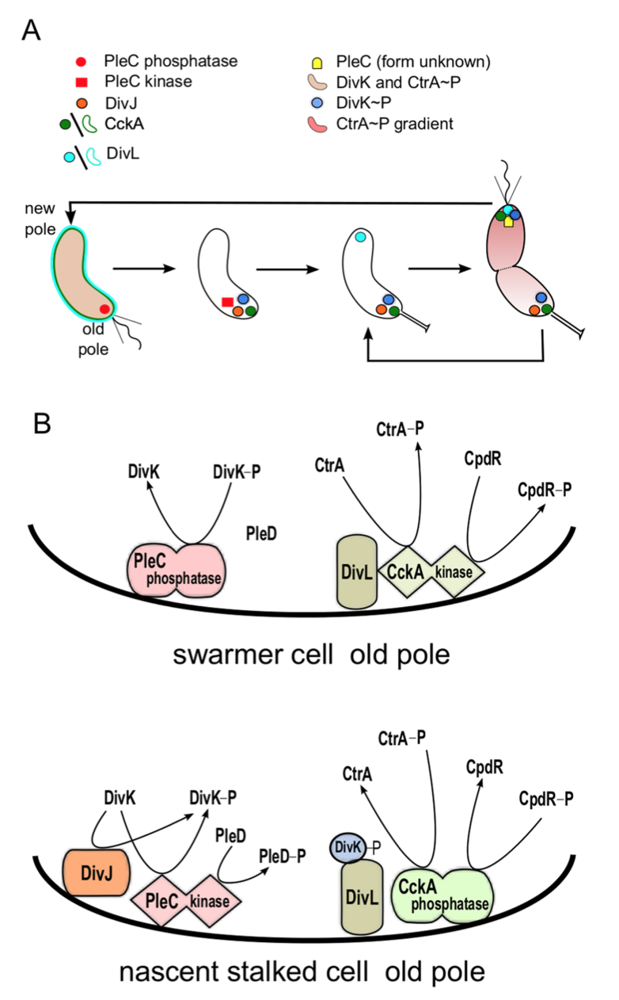
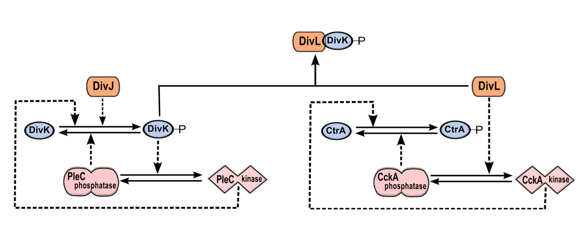
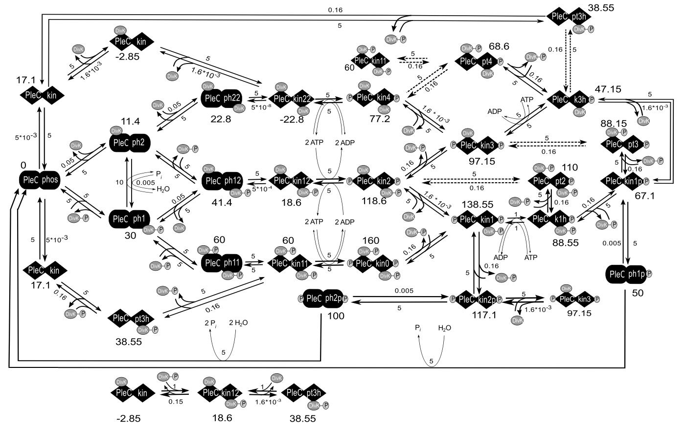

Bistable histidine kinase switch in Caulobacter crescentus
Orchestration of this asymmetric cell division cycle requires proper temporal and spatial regulation of several key proteins (see Figure 2.1 A). The temporal dynamics of these proteins was captured in a pair of papers by Li et al. [1,2]. At least two of these proteins, PleC and CckA, are bifunctional, capable of acting as either phosphatase or kinase. PleC kinase activity is up- regulated by its own response regulator, DivK. It is unknown how DivK alters the activity of its own phosphorylating enzyme, PleC. DivK is present at roughly constant level throughout the cell cycle [3]. However, PleC is a phosphatase during the swarmer stage of the cell cycle and kinase during the stalked stage (see Figure 2.1 B).

Figure 2.1: Morphological transitions in Caulobacter crescentus are governed by changes in localization and activity of proteins. (A) Schematic representation of the Caulobacter crescentus cell cycle. The cell undergoes a series of morphological changes from swarmer cell (left)→nascent stalked cell→stalked cell→pre-divisonal cell (right). These events are driven by changes in the activity and localization of cell cycle proteins. In particular, notice that DivL (light blue) and CckA (green) are uniformly distributed on the membrane in the swarmer cell but localized at the poles in the stalked cell. (B) Model of the status of PleC and CckA activity at the old pole in the swarmer cell and in the nascent stalked cell. In the swarmer cell, DivJ is not localized or activated. As a result, PleC is a phosphatase and CckA is a kinase. In the stalked cell, DivJ is localized to the old pole, causing PleC to flip to the kinase form, which in turn induces CckA to switch to a phosphatase.
The phosphorylation states of DivK and CtrA are governed by the bifunctional histidine kinases PleC and CckA, respectively. Both PleC and CckA can switch between two conformations: a kinase conformation and a phosphatase conformation [4,5] (see Figure 2.1 B). Typically, in bacteria the change in activity of a bifunctional histidine kinase is brought about by an external signal molecule binding to the sensor region of the protein [6]. However, the change in PleC from a phosphatase to a kinase is brought about by its substrate, DivK [4]. In fact, the sensor domain of PleC is not essential for its function [7]. This interaction, where substrate binding to a bifunctional histidine kinase changes its function, has, to our knowledge, been observed only for PleC in Caulobacter. It has been suggested that DivK up-regulates PleC kinase activity preferentially in stalked cells because it is in stalked cells where DivK~P and PleC are co-localized at the poles [4].

Figure 2.2: The DivJ-PleC-DivK and DivL-CckA-CtrA modules are coupled via DivK~P-DivL interaction. PleC kinase and DivK~P are involved in a positive feedback loop. By phosphorylating DivK, DivJ biases the positive feedback loop toward the PleC kinase state. DivL up-regulates the kinase form of CckA, which in turn phosphorylates CtrA. The phosphorylated form of DivK~P binds to and inactivates DivL, causing CckA to revert to the phosphatase form and dephosphorylate CtrA.
Taken together, these observations suggest that PleC-DivJ-DivK and DivL-CckA-CtrA are crucial drivers of the swarmer-to-stalked transition, as summarized in Figure 2.1 and Figure 2.2.
Method
Here, we propose a mechanism for ligand-dependent modifications of the bifunctional histidine kinase, PleC. The mechanism consists of elementary chemical reactions describing ligands (either DivK or DivK~P) binding to the histidine kinase dimer in either its phosphatase or kinase form. The binding states determine the rates of the autophosphorylation, phosphotransfer, and phosphatase reactions catalyzed by PleC. If DivK~P is more efficient than unphosphorylated DivK at promoting the transition of PleC from phosphatase to kinase, then PleC and DivK~P would be involved in a positive feedback loop. Such positive feedback loops are well known for their tendency to function as bistable toggle switches [8], and toggle switches are well known for their roles in cellular decision- making [9-11] including critical transitions in the eukaryotic cell cycle [12-14].
We have a detailed model of the interactions between DivK and PleC, under reasonable conditions on the rate constants (or propensities) of these reactions, exhibits robust bistability as a function of DivJ activity. The complete reaction network (Figure 2.3) was translated into a system of 52 non-linear ordinary differential equations using the mass-action law of chemical kinetics, with one exception. The mechanism by which DivL promotes the kinase form of CckA is unknown, so we modeled this step phenomenologically with a Hill function. Because there are many closed loops of elementary chemical reactions in Figure 2.3, we must choose rate constant values that respect the thermodynamic principle of detailed balance. As long as we satisfy these thermodynamic constraints, we find that the reaction network exhibits bistability over a robust range of parameter values.

Figure 2.3: Chemical reaction networks on which the model is based. Here we only show the PleC-DivK system.
The equations for the full model were encoded as .ode files and simulated using the freely available software, XPP-AUT. The signal-response curves were drawn using the AUTO facility of XPP-AUT. From the data points generated by XPP-AUT, the plots shown in the figures were generated using the python library, Matplotlib [15].
Reference
- Li S, Brazhnik P, Sobral B, Tyson JJ (2008) A Quantitative Study of the Division Cycle of Caulobacter crescentus Stalked Cells. PLoS Computational Biology 4(1): e9.
- Li S, Brazhnik P, Sobral B, Tyson JJ (2009) Temporal Controls of the Asymmetric Cell Division Cycle in Caulobacter crescentus. PLoS Computational Biology 5(8): e1000463.
- Jacobs C, Hung D, Shapiro L (2001) Dynamic localization of a cytoplasmic signal transduction response regulator controls morphogenesis during the Caulobacter cell cycle. Proceedings of the National Academy of Sciences of the United States of America 98: 4095-4100.
- Paul R, Jaeger T, Abel S, Wiederkehr I, Folcher M, et al. (2008) Allosteric regulation of histidine kinases by their cognate response regulator determines cell fate. Cell 133: 452-461.
- Tsokos CG, Perchuk BS, Laub MT (2011) A dynamic complex of signaling proteins uses polar localization to regulate cell fate asymmetry in Caulobacter crescentus. Dev Cell 20: 329-341.
- Stewart RC (2010) Protein histidine kinases: assembly of active sites and their regulation in signaling pathways. Current Opinion in Microbiology 13: 133-141.
- Hecht GB, Lane T, Ohta N, Sommer JM, Newton A (1995) An essential single domain response regulator required for normal cell division and differentiation in Caulobacter crescentus. the The European Molecular Biology Organization Journal 14: 3915-3924.
- Tyson J (2003) Sniffers, buzzers, toggles and blinkers: dynamics of regulatory and signaling pathways in the cell. Current Opinion in Cell Biology 15: 221-231.
- Atkinson MR, Savageau MA, Myers JT, Ninfa AJ (2003) Development of genetic circuitry exhibiting toggle switch or oscillatory behavior in Escherichia coli. Cell 113: 597-607.
- Gardner TS, Cantor CR, Collins JJ (2000) Construction of a genetic toggle switch in Escherichia coli. Nature 403: 339-342.
- Arkin A, Ross J, McAdams HH (1998) Stochastic kinetic analysis of developmental pathway bifurcation in phage lambda-infected Escherichia coli cells. Genetics 149: 1633-1648.
- Sha W, Moore J, Chen K, Lassaletta AD, Yi C-S, et al. (2003) Hysteresis drives cell-cycle transitions in Xenopus laevis egg extracts. Proceedings of the National Academy of Sciences of the United States of America 100: 975-980.
- Yao G, Lee TJ, Mori S, Nevins JR, You L (2008) A bistable Rb-E2F switch underlies the restriction point. Nature Cell Biology 10: 476-482.
- Novak B, Tyson JJ, Gyorffy B, Csikasz-Nagy A (2007) Irreversible cell-cycle transitions are due to systems-level feedback. Nature Cell Biology 9: 724-728.
- Hunter JD (2007) Matplotlib: A 2D Graphics Environment. Computing in Science Engineering 9: 90-95.
 webmaster
webmaster